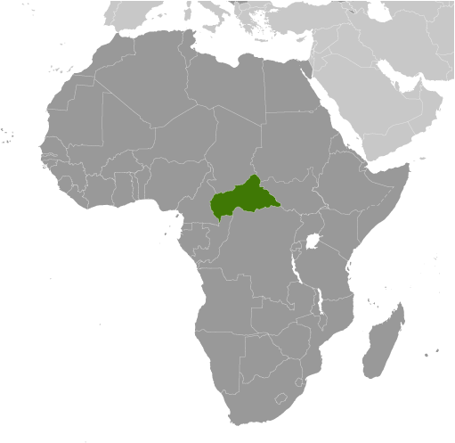
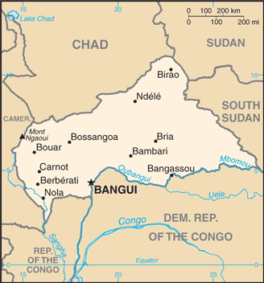
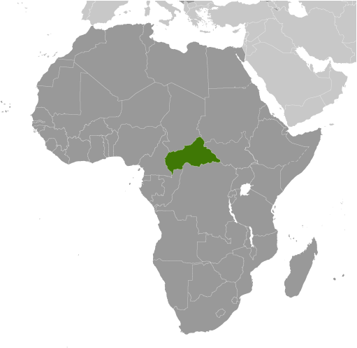
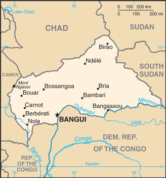

-
Introduction :: Central African Republic
-
Background:The former French colony of Ubangi-Shari became the Central African Republic upon independence in 1960. After three tumultuous decades of misrule - mostly by military governments - civilian rule was established in 1993 but lasted only a decade. In March 2003, President Ange-Felix PATASSE was deposed in a military coup led by General Francois BOZIZE, who established a transitional government. Elections held in 2005 affirmed General BOZIZE as president; he was reelected in 2011 in voting widely viewed as flawed. The government still lacks full control of the countryside, where lawlessness persists. Several rebel groups joined together in early December 2012 to launch a series of attacks that left them in control of numerous towns in the northern and central parts of the country. The rebels - unhappy with BOZIZE's government - participated in peace talks in early January 2013 which resulted in a coalition government including the rebellion's leadership. In March 2013, the coalition government dissolved, rebels seized the capital, and President BOZIZE fled the country. Rebel leader Michel DJOTODIA assumed the presidency and the following month established a National Transitional Council (CNT). In January 2014, the CNT elected Catherine SAMBA-PANZA as interim president. Elections completed in March 2016 installed independent candidate Faustin-Archange TOUADERA as president; he continues to work towards peace between the government and armed groups, and is developing a disarmament, demobilization, reintegration, and repatriation program to reintegrate the armed groups into society.
-
Geography :: Central African Republic
-
Location:Central Africa, north of Democratic Republic of the CongoGeographic coordinates:7 00 N, 21 00 EMap references:AfricaArea:total: 622,984 sq kmland: 622,984 sq kmwater: 0 sq kmcountry comparison to the world: 46Area - comparative:slightly smaller than TexasLand boundaries:total: 5,920 kmborder countries (6): Cameroon 901 km, Chad 1556 km, Democratic Republic of the Congo 1747 km, Republic of the Congo 487 km, South Sudan 1055 km, Sudan 174 kmCoastline:0 km (landlocked)Maritime claims:none (landlocked)Climate:tropical; hot, dry winters; mild to hot, wet summersTerrain:vast, flat to rolling plateau; scattered hills in northeast and southwestElevation:mean elevation: 635 melevation extremes: 335 m lowest point: Oubangui River1410 highest point: Mont NgaouiNatural resources:diamonds, uranium, timber, gold, oil, hydropowerLand use:agricultural land: 8.1% (2011 est.)arable land: 2.9% (2011 est.) / permanent crops: 0.1% (2011 est.) / permanent pasture: 5.1% (2011 est.)forest: 36.2% (2011 est.)other: 55.7% (2011 est.)Irrigated land:10 sq km (2012)Population distribution:majority of residents live in the western and central areas of the country, especially in and around the capital of BanguiNatural hazards:hot, dry, dusty harmattan winds affect northern areas; floods are commonEnvironment - current issues:water pollution; tap water is not potable; poaching and mismanagement have diminished the country's reputation as one of the last great wildlife refuges; desertification; deforestation; soil erosionEnvironment - international agreements:party to: Biodiversity, Climate Change, Climate Change-Kyoto Protocol, Desertification, Endangered Species, Hazardous Wastes, Ozone Layer Protection, Tropical Timber 94, Wetlandssigned, but not ratified: Law of the SeaGeography - note:landlocked; almost the precise center of Africa
-
People and Society :: Central African Republic
-
Population:5,745,062 (July 2018 est.)
note: estimates for this country explicitly take into account the effects of excess mortality due to AIDS; this can result in lower life expectancy, higher infant mortality, higher death rates, lower population growth rates, and changes in the distribution of population by age and sex than would otherwise be expected
country comparison to the world: 116Nationality:noun: Central African(s)adjective: Central AfricanEthnic groups:Baya 33%, Banda 27%, Mandjia 13%, Sara 10%, Mboum 7%, M'Baka 4%, Yakoma 4%, other 2%Languages:French (official), Sangho (lingua franca and national language), tribal languagesReligions:indigenous beliefs 35%, Protestant 25%, Roman Catholic 25%, Muslim 15%note: animistic beliefs and practices strongly influence the Christian majority
Demographic profile:The Central African Republic’s (CAR) humanitarian crisis has worsened since a coup in March 2013. CAR’s high mortality rate and low life expectancy are attributed to elevated rates of preventable and treatable diseases (including malaria and malnutrition), an inadequate health care system, precarious food security, and armed conflict. Some of the worst mortality rates are in western CAR’s diamond mining region, which is impoverished because of government attempts to control the diamond trade and the fall in industrial diamond prices. To make matters worse, the government and international donors have reduced health funding in recent years. The CAR’s weak educational system and low literacy rate have also suffered as a result of the country’s ongoing conflict. Schools are closed, qualified teachers are scarce, infrastructure, funding, and supplies are lacking and subject to looting, and many students and teachers are displaced by violence.
Rampant poverty, human rights violations, unemployment, poor infrastructure, and a lack of security and stability have led to forced displacement internally and externally. Since the political crisis that resulted in CAR’s March 2013 coup began in December 2012, approximately 370,000 people have fled to Chad, the Democratic Republic of the Congo (DRC), and other neighboring countries, while more than an estimated 600,000 are displaced internally as of October 2017. The UN has urged countries to refrain from repatriating CAR refugees amid the heightened lawlessness.
Age structure:0-14 years: 39.89% (male 1,151,724 /female 1,140,083)15-24 years: 19.91% (male 574,969 /female 568,942)25-54 years: 32.64% (male 938,365 /female 936,948)55-64 years: 4.17% (male 112,310 /female 127,045)65 years and over: 3.39% (male 75,401 /female 119,275) (2018 est.)population pyramid: The World Factbook Field Image ModalAfrica :: Central African Republic Print
The World Factbook Field Image ModalAfrica :: Central African Republic Print Image DescriptionThis is the population pyramid for Central African Republic. A population pyramid illustrates the age and sex structure of a country's population and may provide insights about political and social stability, as well as economic development. The population is distributed along the horizontal axis, with males shown on the left and females on the right. The male and female populations are broken down into 5-year age groups represented as horizontal bars along the vertical axis, with the youngest age groups at the bottom and the oldest at the top. The shape of the population pyramid gradually evolves over time based on fertility, mortality, and international migration trends.
Image DescriptionThis is the population pyramid for Central African Republic. A population pyramid illustrates the age and sex structure of a country's population and may provide insights about political and social stability, as well as economic development. The population is distributed along the horizontal axis, with males shown on the left and females on the right. The male and female populations are broken down into 5-year age groups represented as horizontal bars along the vertical axis, with the youngest age groups at the bottom and the oldest at the top. The shape of the population pyramid gradually evolves over time based on fertility, mortality, and international migration trends.
For additional information, please see the entry for Population pyramid on the Definitions and Notes page under the References tab.Dependency ratios:total dependency ratio: 90 (2015 est.)youth dependency ratio: 83.1 (2015 est.)elderly dependency ratio: 7 (2015 est.)potential support ratio: 14.4 (2015 est.)Median age:total: 19.8 yearsmale: 19.5 yearsfemale: 20.1 years (2018 est.)country comparison to the world: 197Population growth rate:2.11% (2018 est.)country comparison to the world: 43Birth rate:34 births/1,000 population (2018 est.)country comparison to the world: 24Death rate:12.9 deaths/1,000 population (2018 est.)country comparison to the world: 11Net migration rate:0 migrant(s)/1,000 population (2017 est.)country comparison to the world: 78Population distribution:majority of residents live in the western and central areas of the country, especially in and around the capital of BanguiUrbanization:urban population: 41.4% of total population (2018)rate of urbanization: 2.52% annual rate of change (2015-20 est.)Major urban areas - population:851,000 BANGUI (capital) (2018)Sex ratio:at birth: 1.02 male(s)/female (2017 est.)0-14 years: 1.01 male(s)/female (2017 est.)15-24 years: 1.01 male(s)/female (2017 est.)25-54 years: 1 male(s)/female (2017 est.)55-64 years: 0.84 male(s)/female (2017 est.)65 years and over: 0.64 male(s)/female (2017 est.)total population: 0.98 male(s)/female (2017 est.)Maternal mortality rate:882 deaths/100,000 live births (2015 est.)country comparison to the world: 2Infant mortality rate:total: 84.3 deaths/1,000 live births (2018 est.)male: 91.6 deaths/1,000 live births (2018 est.)female: 76.7 deaths/1,000 live births (2018 est.)country comparison to the world: 4Life expectancy at birth:total population: 53.3 years (2018 est.)male: 51.9 years (2018 est.)female: 54.7 years (2018 est.)country comparison to the world: 219Total fertility rate:4.25 children born/woman (2018 est.)country comparison to the world: 29Contraceptive prevalence rate:15.2% (2010/11)Health expenditures:4.2% of GDP (2014)country comparison to the world: 162Physicians density:0.05 physicians/1,000 population (2009)Hospital bed density:1 beds/1,000 population (2011)Drinking water source:improved: urban: 89.6% of populationrural: 54.4% of populationtotal: 68.5% of populationunimproved: urban: 10.4% of populationrural: 45.6% of populationtotal: 31.5% of population (2015 est.)Sanitation facility access:improved: urban: 43.6% of population (2015 est.)rural: 7.2% of population (2015 est.)total: 21.8% of population (2015 est.)unimproved: urban: 56.4% of population (2015 est.)rural: 92.8% of population (2015 est.)total: 78.2% of population (2015 est.)HIV/AIDS - adult prevalence rate:4% (2017 est.)country comparison to the world: 15HIV/AIDS - people living with HIV/AIDS:110,000 (2017 est.)country comparison to the world: 41HIV/AIDS - deaths:5,200 (2017 est.)country comparison to the world: 26Major infectious diseases:degree of risk: very high (2016)food or waterborne diseases: bacterial and protozoal diarrhea, hepatitis A and E, and typhoid fever (2016)vectorborne diseases: malaria and dengue fever (2016)water contact diseases: schistosomiasis (2016)animal contact diseases: rabies (2016)respiratory diseases: meningococcal meningitis (2016)Obesity - adult prevalence rate:7.5% (2016)country comparison to the world: 159Children under the age of 5 years underweight:23.5% (2010)country comparison to the world: 21Education expenditures:1.2% of GDP (2011)country comparison to the world: 177Literacy:definition: age 15 and over can read and write (2015 est.)total population: 36.8% (2015 est.)male: 50.7% (2015 est.)female: 24.4% (2015 est.)School life expectancy (primary to tertiary education):total: 7 years (2012)male: 8 years (2012)female: 6 years (2012) -
Government :: Central African Republic
-
Country name:conventional long form: Central African Republicconventional short form: nonelocal long form: Republique Centrafricainelocal short form: noneformer: Ubangi-Shari, Central African Empireabbreviation: CARetymology: self-descriptive name specifying the country's location on the continent; "Africa" is derived from the Roman designation of the area corresponding to present-day Tunisia "Africa terra," which meant "Land of the Afri" (the tribe resident in that area), but which eventually came to mean the entire continentGovernment type:presidential republicCapital:name: Banguigeographic coordinates: 4 22 N, 18 35 Etime difference: UTC+1 (6 hours ahead of Washington, DC, during Standard Time)Administrative divisions:14 prefectures (prefectures, singular - prefecture), 2 economic prefectures* (prefectures economiques, singular - prefecture economique), and 1 commune**; Bamingui-Bangoran, Bangui**, Basse-Kotto, Haute-Kotto, Haut-Mbomou, Kemo, Lobaye, Mambere-Kadei, Mbomou, Nana-Grebizi*, Nana-Mambere, Ombella-Mpoko, Ouaka, Ouham, Ouham-Pende, Sangha-Mbaere*, VakagaIndependence:13 August 1960 (from France)National holiday:Republic Day, 1 December (1958)Constitution:history: several previous; latest (interim constitution) approved by the Transitional Council 30 August 2015, adopted by referendum 13-14 December 2015, ratified 27 March 2016 (2017)amendments: proposals require support of the government, two-thirds of the National Council of Transition, and assent by the "Mediator of the Central African" crisis; passage requires at least three-fourths majority vote by the National Council membership; non-amendable constitutional provisions include those on the secular and republican form of government, fundamental rights and freedoms, amendment procedures, or changes to the authorities of various high-level executive, parliamentary, and judicial officials (2017)Legal system:civil law system based on the French modelInternational law organization participation:has not submitted an ICJ jurisdiction declaration; accepts ICCt jurisdictionCitizenship:citizenship by birth: nocitizenship by descent only: least one parent must be a citizen of the Central African Republicdual citizenship recognized: yesresidency requirement for naturalization: 35 yearsSuffrage:18 years of age; universalJudicial branch:highest courts: Supreme Court or Cour Supreme (consists of NA judges); Constitutional Court (consists of 9 judges, at least 3 of whom are women)judge selection and term of office: Supreme Court judges appointed by the president; Constitutional Court judge appointments - 2 by the president, 1 by the speaker of the National Assembly, 2 elected by their peers, 2 are advocates elected by their peers, and 2 are law professors elected by their peers; judges serve 7-year non-renewable termssubordinate courts: high courts; magistrates' courtsExecutive branch:chief of state: President Faustin-Archange TOUADERA (since 30 March 2016)head of government: Prime Minister Simplice SARANDJI (since 2 April 2016)cabinet: Council of Ministers appointed by the presidentelections/appointments: under the 2015 constitution, the president is elected by universal direct suffrage for a period of 5 years (eligible for a second term); election last held 30 December 2015 with a runoff 20 February 2016 (next to be held in 2020)election results: Faustin-Archange TOUADERA elected president in the second round; percent of vote in first round - Anicet-Georges DOLOGUELE (URCA) 23.7%, Faustin-Archange TOUADERA (independent) 19.1%, Desire KOLINGBA (RDC) 12.%, Martin ZIGUELE (MLPC) 11.4%, other 33.8%; percent of vote in second round - Faustin-Archange TOUADERA 62.7%, Anicet-Georges DOLOGUELE 37.3%
note: rebel forces seized the capital in March 2013, forcing former President BOZIZE to flee the country; Interim President Michel DJOTODIA assumed the presidency, reinstated the prime minister, and established a National Transitional Council (CNT) in April 2013; the NTC elected Catherine SAMBA-PANZA interim president in January 2014 to serve until February 2015, when new elections were to be held; her term was extended because instability delayed new elections and the transition did not take place until the end of March 2016
Legislative branch:description: unicameral National Assembly or Assemblee Nationale (140 seats; members directly elected in single-seat constituencies by absolute majority vote with a second round if needed; members serve 5-year terms)elections: last held 30 December 2015 (results annulled), 14 February 2016 - first round and 31 March 2016 - second round (next to be held in 2021)election results: percent of vote by party - NA; seats by party - UNDP 16, URCA 11, RDC 8, MLPC 10, KNK 7, other 28, independent 60; composition - men 129, women 11, percent of women 7.9%Political parties and leaders:Action Party for Development or PAD [El Hadj Laurent NGON-BABA]
Alliance for Democracy and Progress or ADP [Clement BELIBANGA]
Central African Democratic Rally or RDC [Desire Nzanga KOLINGBA]
Movement for Democracy and Development or MDD [Louis PAPENIAH]
Movement for the Liberation of the Central African People or MLPC [Martin ZIGUELE]
National Convergence (also known as Kwa Na Kwa) or KNK [Francois BOZIZE]
National Union for Democracy and Progress or UNDP [Amine MICHEL]
New Alliance for Progress or NAP [Jean-Jacques DEMAFOUTH]
Social Democratic Party or PSD [Enoch LAKOUE]
Union for Central African Renewal or URCA [Anicet-Georges DOLOGUELE]International organization participation:ACP, AfDB, AU, BDEAC, CEMAC, EITI (compliant country) (suspended), FAO, FZ, G-77, IAEA, IBRD, ICAO, ICCt, ICRM, IDA, IFAD, IFC, IFRCS, ILO, IMF, Interpol, IOC, IOM, ITSO, ITU, ITUC (NGOs), MIGA, NAM, OIC (observer), OIF, OPCW, UN, UNCTAD, UNESCO, UNIDO, UNWTO, UPU, WCO, WHO, WIPO, WMO, WTODiplomatic representation in the US:chief of mission: Ambassador Martial NDOUBOU (since 17 September 2018)chancery: 2704 Ontario Road NW, Washington, DC 20009telephone: [1] (202) 483-7800FAX: [1] (202) 332-9893Diplomatic representation from the US:chief of mission: Ambassador (vacant); Charge d'Affaires David P. BROWNSTEIN (since September 2017)embassy: Avenue David Dacko, Banguimailing address: P.O. Box 924, Banguitelephone: [236] 21 61 0200FAX: [236] 21 61 4494Flag description:four equal horizontal bands of blue (top), white, green, and yellow with a vertical red band in center; a yellow five-pointed star to the hoist side of the blue band; banner combines the Pan-African and French flag colors; red symbolizes the blood spilled in the struggle for independence, blue represents the sky and freedom, white peace and dignity, green hope and faith, and yellow tolerance; the star represents aspiration towards a vibrant futureNational symbol(s):elephant; national colors: blue, white, green, yellow, redNational anthem:name: "Le Renaissance" (The Renaissance)lyrics/music: Barthelemy BOGANDA/Herbert PEPPERnote: adopted 1960; Barthelemy BOGANDA wrote the anthem's lyrics and was the first prime minister of the autonomous French territory
-
Economy :: Central African Republic
-
Economy - overview:
Subsistence agriculture, together with forestry and mining, remains the backbone of the economy of the Central African Republic (CAR), with about 60% of the population living in outlying areas. The agricultural sector generates more than half of estimated GDP, although statistics are unreliable in the conflict-prone country. Timber and diamonds account for most export earnings, followed by cotton. Important constraints to economic development include the CAR's landlocked geography, poor transportation system, largely unskilled work force, and legacy of misdirected macroeconomic policies. Factional fighting between the government and its opponents remains a drag on economic revitalization. Distribution of income is highly unequal and grants from the international community can only partially meet humanitarian needs. CAR shares a common currency with the Central African Monetary Union. The currency is pegged to the Euro.
Since 2009, the IMF has worked closely with the government to institute reforms that have resulted in some improvement in budget transparency, but other problems remain. The government's additional spending in the run-up to the 2011 election worsened CAR's fiscal situation. In 2012, the World Bank approved $125 million in funding for transport infrastructure and regional trade, focused on the route between CAR's capital and the port of Douala in Cameroon. In July 2016, the IMF approved a three-year extended credit facility valued at $116 million; in mid-2017, the IMF completed a review of CAR’s fiscal performance and broadly approved of the government’s management, although issues with revenue collection, weak government capacity, and transparency remain. The World Bank in late 2016 approved a $20 million grant to restore basic fiscal management, improve transparency, and assist with economic recovery.
Participation in the Kimberley Process, a commitment to remove conflict diamonds from the global supply chain, led to a partially lifted the ban on diamond exports from CAR in 2015, but persistent insecurity is likely to constrain real GDP growth.
GDP (purchasing power parity):$3.39 billion (2017 est.)$3.249 billion (2016 est.)$3.108 billion (2015 est.)note: data are in 2017 dollars
country comparison to the world: 185GDP (official exchange rate):$1.937 billion (2017 est.) (2017 est.)GDP - real growth rate:4.3% (2017 est.)4.5% (2016 est.)4.8% (2015 est.)country comparison to the world: 67GDP - per capita (PPP):$700 (2017 est.)$700 (2016 est.)$600 (2015 est.)note: data are in 2017 dollars
country comparison to the world: 228Gross national saving:5.4% of GDP (2017 est.)8.2% of GDP (2016 est.)4.2% of GDP (2015 est.)country comparison to the world: 175GDP - composition, by end use:household consumption: 95.3% (2017 est.)government consumption: 8.5% (2017 est.)investment in fixed capital: 13.7% (2017 est.)investment in inventories: 0% (2017 est.)exports of goods and services: 12% (2017 est.)imports of goods and services: -29.5% (2017 est.)GDP - composition, by sector of origin:agriculture: 43.2% (2017 est.)industry: 16% (2017 est.)services: 40.8% (2017 est.)Agriculture - products:cotton, coffee, tobacco, cassava (manioc, tapioca), yams, millet, corn, bananas; timberIndustries:gold and diamond mining, logging, brewing, sugar refiningIndustrial production growth rate:3.9% (2017 est.)country comparison to the world: 77Labor force:2.242 million (2017 est.)country comparison to the world: 120Unemployment rate:6.9% (2017 est.)country comparison to the world: 103Population below poverty line:62% NA (2008 est.)Distribution of family income - Gini index:43.6 (2003 est.)61.3 (1993)country comparison to the world: 46Budget:revenues: 282.9 million (2017 est.)expenditures: 300.1 million (2017 est.)Taxes and other revenues:14.6% (of GDP) (2017 est.)country comparison to the world: 198Budget surplus (+) or deficit (-):-0.9% (of GDP) (2017 est.)country comparison to the world: 71Public debt:52.9% of GDP (2017 est.)56% of GDP (2016 est.)country comparison to the world: 93Fiscal year:calendar yearInflation rate (consumer prices):4.1% (2017 est.)4.6% (2016 est.)country comparison to the world: 159Central bank discount rate:4.25% (31 December 2009)4.75% (31 December 2008)country comparison to the world: 90Commercial bank prime lending rate:15.5% (31 December 2017 est.)15.5% (31 December 2016 est.)country comparison to the world: 35Stock of narrow money:$428.9 million (31 December 2017 est.)$341.5 million (31 December 2016 est.)country comparison to the world: 172Stock of broad money:$428.9 million (31 December 2017 est.)$341.5 million (31 December 2016 est.)country comparison to the world: 176Stock of domestic credit:$547 million (31 December 2017 est.)$452.7 million (31 December 2016 est.)country comparison to the world: 177Current account balance:-$163 million (2017 est.)-$97 million (2016 est.)country comparison to the world: 94Exports:$113.7 million (2017 est.)$101.5 million (2016 est.)country comparison to the world: 196Exports - partners:France 31.2%, Burundi 16.2%, China 12.5%, Cameroon 9.6%, Austria 7.8% (2017)Exports - commodities:diamonds, timber, cotton, coffeeImports:$393.1 million (2017 est.)$342.2 million (2016 est.)country comparison to the world: 199Imports - commodities:food, textiles, petroleum products, machinery, electrical equipment, motor vehicles, chemicals, pharmaceuticalsImports - partners:France 17.1%, US 12.3%, India 11.5%, China 8.2%, South Africa 7.4%, Japan 5.8%, Italy 5.1%, Cameroon 4.9%, Netherlands 4.6% (2017)Reserves of foreign exchange and gold:$304.3 million (31 December 2017 est.)$252.5 million (31 December 2016 est.)country comparison to the world: 168Debt - external:$779.9 million (31 December 2017 est.)$691.5 million (31 December 2016 est.)country comparison to the world: 171Exchange rates:Cooperation Financiere en Afrique Centrale francs (XAF) per US dollar -605.3 (2017 est.)593.01 (2016 est.)593.01 (2015 est.)591.45 (2014 est.)494.42 (2013 est.) -
Energy :: Central African Republic
-
Electricity access:population without electricity: 4.5 million (2013)electrification - total population: 3% (2013)electrification - urban areas: 5% (2013)electrification - rural areas: 1% (2013)Electricity - production:171.4 million kWh (2016 est.)country comparison to the world: 194Electricity - consumption:159.4 million kWh (2016 est.)country comparison to the world: 196Electricity - exports:0 kWh (2016 est.)country comparison to the world: 119Electricity - imports:0 kWh (2016 est.)country comparison to the world: 133Electricity - installed generating capacity:38,300 kW (2016 est.)country comparison to the world: 197Electricity - from fossil fuels:50% of total installed capacity (2016 est.)country comparison to the world: 151Electricity - from nuclear fuels:0% of total installed capacity (2017 est.)country comparison to the world: 64Electricity - from hydroelectric plants:50% of total installed capacity (2017 est.)country comparison to the world: 40Electricity - from other renewable sources:1% of total installed capacity (2017 est.)country comparison to the world: 151Crude oil - production:0 bbl/day (2017 est.)country comparison to the world: 120Crude oil - exports:0 bbl/day (2015 est.)country comparison to the world: 105Crude oil - imports:0 bbl/day (2015 est.)country comparison to the world: 108Crude oil - proved reserves:0 bbl (1 January 2018 est.)country comparison to the world: 117Refined petroleum products - production:0 bbl/day (2017 est.)country comparison to the world: 129Refined petroleum products - consumption:2,800 bbl/day (2016 est.)country comparison to the world: 189Refined petroleum products - exports:0 bbl/day (2015 est.)country comparison to the world: 142Refined petroleum products - imports:2,799 bbl/day (2015 est.)country comparison to the world: 185Natural gas - production:0 cu m (2017 est.)country comparison to the world: 115Natural gas - consumption:0 cu m (2017 est.)country comparison to the world: 131Natural gas - exports:0 cu m (2017 est.)country comparison to the world: 81Natural gas - imports:0 cu m (2017 est.)country comparison to the world: 105Natural gas - proved reserves:0 cu m (1 January 2014 est.)country comparison to the world: 121Carbon dioxide emissions from consumption of energy:413,800 Mt (2017 est.)country comparison to the world: 187
-
Communications :: Central African Republic
-
Telephones - fixed lines:total subscriptions: 1,964 (July 2016 est.)subscriptions per 100 inhabitants: less than 1 (July 2016 est.)country comparison to the world: 214Telephones - mobile cellular:total subscriptions: 1,248,346 (July 2016 est.)subscriptions per 100 inhabitants: 22 (July 2016 est.)country comparison to the world: 156Telephone system:general assessment: network consists principally of microwave radio relay and at low-capacity; ongoing conflict has obstructed telecommunication and media development, although there are ISP and mobile phone carriers, radio is the most-popular communications medium (2017)domestic: very limited telephone service with less than 1 fixed-line connection per 100 persons; with the presence of multiple providers mobile-cellular service has reached 22 per 100 mobile-cellular subscribers; cellular usage is increasing from a low base; most fixed-line and mobile-cellular telephone services are concentrated in Bangui (2017)international: country code - 236; satellite earth station - 1 Intelsat (Atlantic Ocean) (2015)Broadcast media:government-owned network, Radiodiffusion Television Centrafricaine, provides limited domestic TV broadcasting; state-owned radio network is supplemented by a small number of privately owned broadcast stations as well as a few community radio stations; transmissions of at least 2 international broadcasters are available (2017)Internet country code:.cfInternet users:total: 246,000 (July 2016 est.)percent of population: 4.6% (July 2016 est.)country comparison to the world: 166
-
Transportation :: Central African Republic
-
National air transport system:number of registered air carriers: 2 (2015)inventory of registered aircraft operated by air carriers: 2 (2015)annual passenger traffic on registered air carriers: 46,364 (2015)annual freight traffic on registered air carriers: 0 mt-km (2015)Civil aircraft registration country code prefix:TL (2016)Airports:39 (2013)country comparison to the world: 106Airports - with paved runways:total: 2 (2017)2,438 to 3,047 m: 1 (2017)1,524 to 2,437 m: 1 (2017)Airports - with unpaved runways:total: 37 (2013)2,438 to 3,047 m: 1 (2013)1,524 to 2,437 m: 11 (2013)914 to 1,523 m: 19 (2013)under 914 m: 6 (2013)Roadways:total: 20,278 km (2010)paved: 1,385 km (2010)unpaved: 18,893 km (2010)country comparison to the world: 109Waterways:2,800 km (the primary navigable river is the Ubangi, which joins the River Congo; it was the traditional route for the export of products because it connected with the Congo-Ocean railway at Brazzaville; because of the warfare on both sides of the River Congo from 1997, importers and exporters preferred routes through Cameroon) (2011)country comparison to the world: 34Ports and terminals:river port(s): Bangui (Oubangui)Nola (Sangha)
-
Military and Security :: Central African Republic
-
Military branches:Central African Armed Forces (Forces Armees Centrafricaines, FACA): Ground Forces (includes Military Air Service), General Directorate of Gendarmerie Inspection (DGIG), National Police (2017)Military service age and obligation:18 years of age for military service; no conscription (2017)
-
Transnational Issues :: Central African Republic
-
Disputes - international:periodic skirmishes persist over water and grazing rights among related pastoral populations along the border with southern SudanRefugees and internally displaced persons:IDPs: 547,814 (clashes between army and rebel groups since 2005; tensions between ethnic groups) (2018)Trafficking in persons:current situation: Central African Republic (CAR) is a source, transit, and destination country for children subjected to forced labor and sex trafficking, women subjected to forced prostitution, and adults subjected to forced labor; most victims appear to be CAR citizens exploited within the country, with a smaller number transported back and forth between the CAR and nearby countries; armed groups operating in the CAR, including those aligned with the former SELEKA Government and the Lord’s Resistance Army, continue to recruit and re-recruit children for military activities and labor; children are also subject to domestic servitude, commercial sexual exploitation, and forced labor in agriculture, mines, shops, and street vending; women and girls are subject to domestic servitude, sexual slavery, commercial sexual exploitation, and forced marriagetier rating: Tier 3 – the Central African Republic does not fully comply with the minimum standards for the elimination of trafficking and is not making significant efforts to do so; the government conducted a limited number of investigations and prosecutions of cases of suspected human trafficking in 2014 but did not identify, provide protection to, or refer to care providers any trafficking victims; the government did not directly provide reintegration programs for demobilized child soldiers, leaving victims vulnerable to further exploitation or retrafficking by armed groups, including those affiliated with the government; in 2014, an NGO and the government began drafting a national action plan against trafficking but no efforts were reported to establish a policy against child soldiering or to raise awareness about existing laws prohibiting the use of children in the armed forces (2015)
Africa ::
Central African Republic